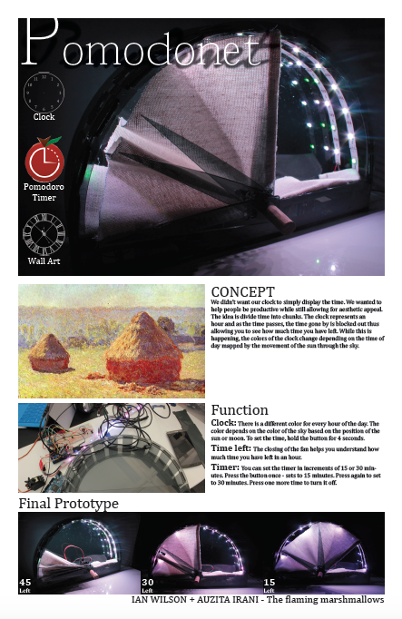
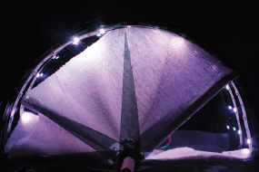

My team mate and I built an alarm clock that was based on the pomodoro timer and inspired by Monet's Haystacks paintings.
We started by exploring the individual components of an alarm clock, which we will then assembled into a fully functional alarm clock. The clock displayed the current time by using the colours of the sky at that time (Based on the Haystacks paintings), allowed the user to set the current time, allowed the user to set an alarm time in increments of 15 minutes based on the Pomodoro concept, allowed the user to enable the alarm time, and allowed the user to turn off the alarm when it goes off.
The device used a speaker of piezo-electric buzzer for the alarm and for feedback sounds as appropriate. It employed an 8x8 matrix display to represent the current time, feedback during setting the alarm time, and a counterpart to the audio alarm. The device also interfaced with a battery powered RTC to keep the current time even when the microcontroller is powered off.
This is a poster explaining the alarm clock. View the full size poster
here.

This was the final prototype.
